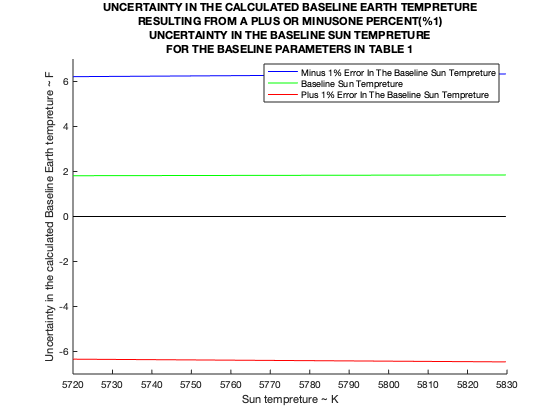

Ts = linspace(5714.28,5829.72,200)';
dse = 1.5E8;
Ds = 1.394E6;
Ee = 0.826;
Es = 1;
ae = 0.94;
delta_Ts = Ts*0.01;
delta_dse = dse*0.01;
delta_Ds = Ds*0.01;
delta_Ee = Ee*0.01;
delta_Es = Es*0.01;
delta_ae = ae*0.01;
a = 1;
b = -1/4;
c = 2/4;
d = -1/4;
e = 1/4;
f = 1/4;
delta_Te = zeros(1,200);
x = [-0.01,0,0.01];
for j = 1:3
for i = 1:200;
Te = ((Ds^2*Es*ae*(Ts(i,:)+(x(1,j)*Ts(i,:)))^4)/(16*Ee*dse^2))^(1/4);
delta_Te(j,i) = (sqrt((a*(x(1,j)))^2+(b*(delta_dse/dse))^2+(c*(delta_Ds/Ds))^2+(d*(delta_Ee/Ee))^2+(e*(delta_Es/Es))^2+(f*(delta_ae/ae))^2))*Te;
end
end
delta_Tef = 1.8*delta_Te;
q = zeros(1,200);
hold on
plot(Ts,delta_Tef(1,:),'b')
plot(Ts,delta_Tef(2,:)./2,'g')
plot(Ts,-delta_Tef(3,:),'r')
plot(Ts,q,'k')
xlabel('Sun tempreture ~ K')
ylabel('Uncertainty in the calculated Baseline Earth tempreture ~ F')
title({'UNCERTAINTY IN THE CALCULATED BASELINE EARTH TEMPRETURE';'RESULTING FROM A PLUS OR MINUSONE PERCENT(%1)';'UNCERTAINTY IN THE BASELINE SUN TEMPRETURE';'FOR THE BASELINE PARAMETERS IN TABLE 1'})
legend('Minus 1% Error In The Baseline Sun Tempreture','Baseline Sun Tempreture','Plus 1% Error In The Baseline Sun Tempreture')
xlim([5720,5830])
ylim([-7,7])
hold off
